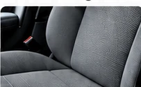
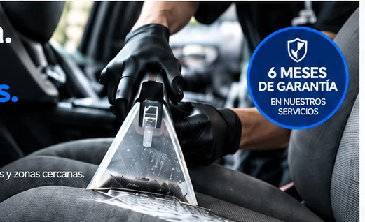
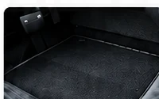
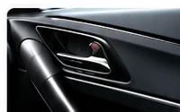
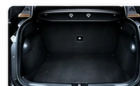
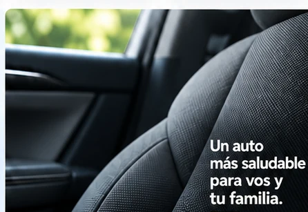
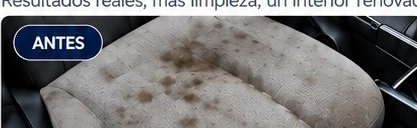
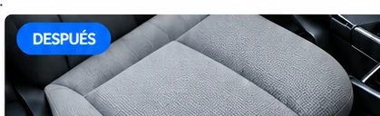
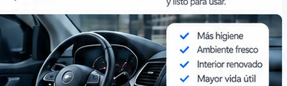

Asientos
Limpieza profunda, tratamiento de manchas y desinfección.

Eliminamos manchas, suciedad y residuos acumulados del habitáculo. Tratamientos específicos para tela, cuero y gamuza.
Particulares y empresas · Factura A y B.
Eliminación de manchas, suciedad y alérgenos.
Cuidamos tu salud y el medio ambiente.
Neutralizamos el origen de los malos olores.
Cuidado integral del habitáculo de tu auto.

Limpieza profunda, tratamiento de manchas y desinfección.

Eliminación de tierra, barro y suciedad incrustada. Extracción profunda.

Limpieza de plásticos, telas y zonas de difícil acceso.

Limpieza completa, eliminación de manchas y residuos.
El auto acumula polvo, manchas, ácaros, bacterias y contaminación diaria. Aplicamos tratamientos específicos para limpiar a fondo y neutralizar aromas desagradables desde su origen.

Un auto más saludable para vos y tu familia.Resultados reales, más limpieza, un interior renovado.

ANTES
DESPUÉSUn método profesional para un interior más limpio y duradero.
Eliminamos polvo, arena y suciedad incrustada.
Productos adecuados para tela, cuero y gamuza.
Desincrustamos manchas y residuos.
Habitáculo limpio, fresco y listo para usar.
